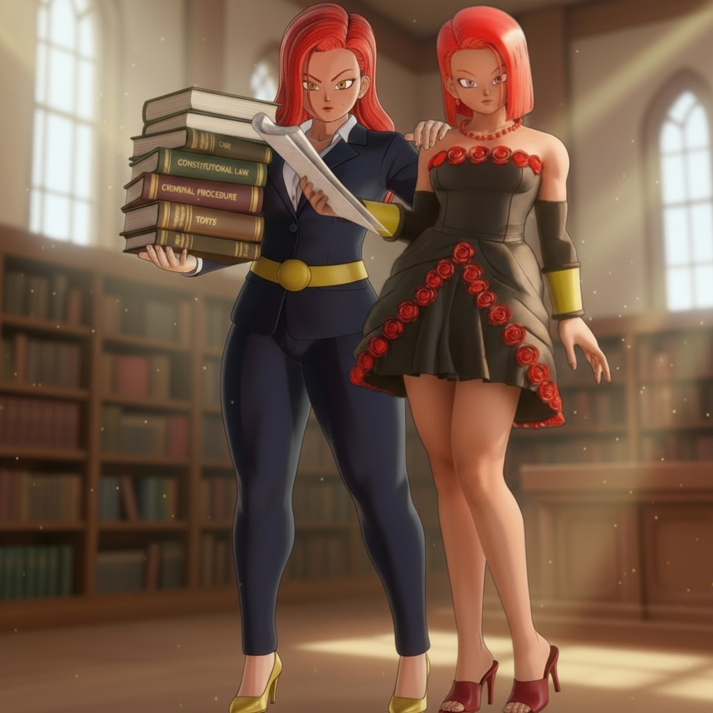
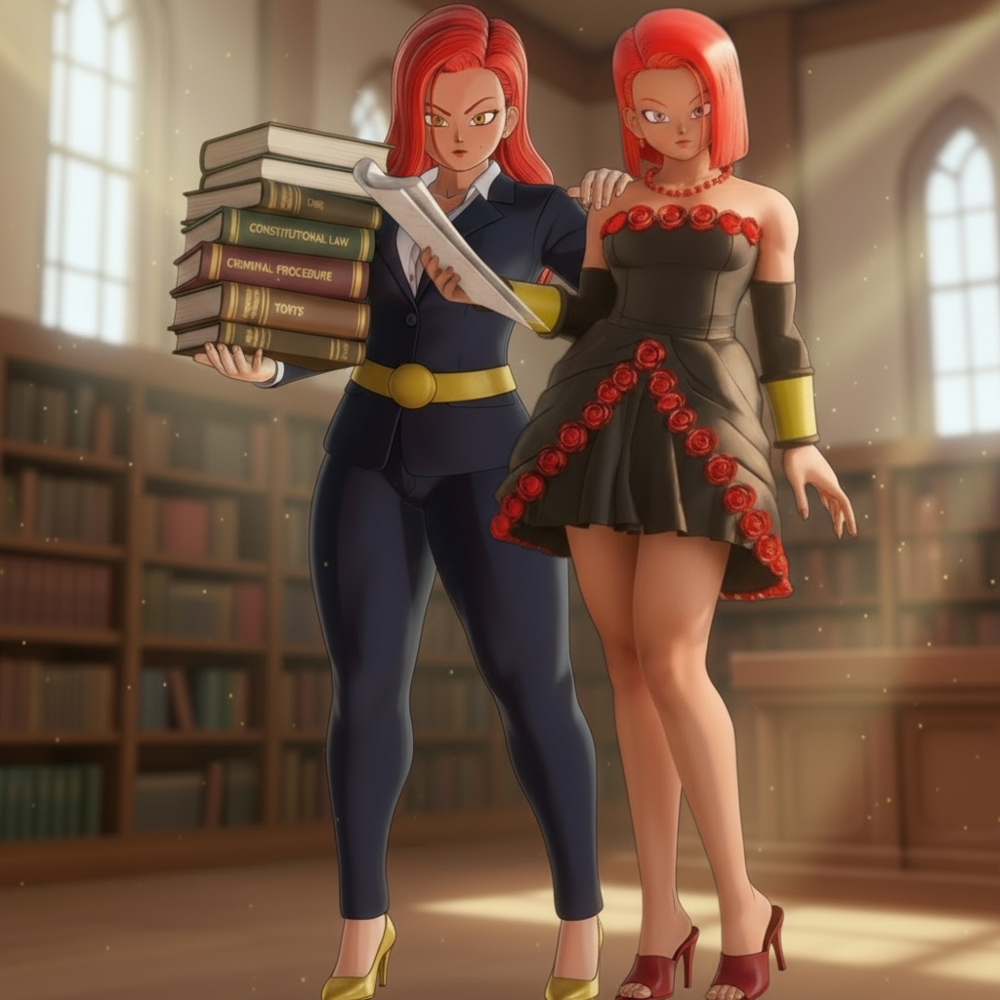

Victoria Chaser

 
Content: == Overview == Victoria Black’s twin. Temporarily attained
“Victoria Blue” via potion crafted from Binary’s stolen energy and the
Fruit of the Tree of Might (via Turles). Final use and death occur
during the Gas Mask Clan Saga
rescue.

Content: == Overview == Victoria Black’s twin. Temporarily attained
“Victoria Blue” via potion crafted from Binary’s stolen energy and the
Fruit of the Tree of Might (via Turles). Final use and death occur
during the Gas Mask Clan Saga
rescue.
Alongside Victoria Black, Wargirl, and their brother Kai (a dojo master), Chaser escapes the Black Frieza future to train in the past and change destiny. As the original lead, she carries the burden of leadership, insisting Harmony (Harmony Blaster) earn her strength as they did. When Black falters against Gogeta, Chaser avenges her—decisive and uncompromising. Cracks in her honor—jealousy and rashness—foreshadow the risky bargains that later birth Victoria Blue.
Appearance
Contrast to Victoria Black; Blue form visuals.
Victoria Blue (Transformation)
Mechanism: potion (Binary energy + Tree of Might fruit) Limitation: supply ended with Turles’ death Final use: Gas Mask Clan rescue; form ended, followed by death
Relationships
Victoria Black (twin), Wargirl, Harmony Category:Characters Category:Victoria Family Category:Transformations